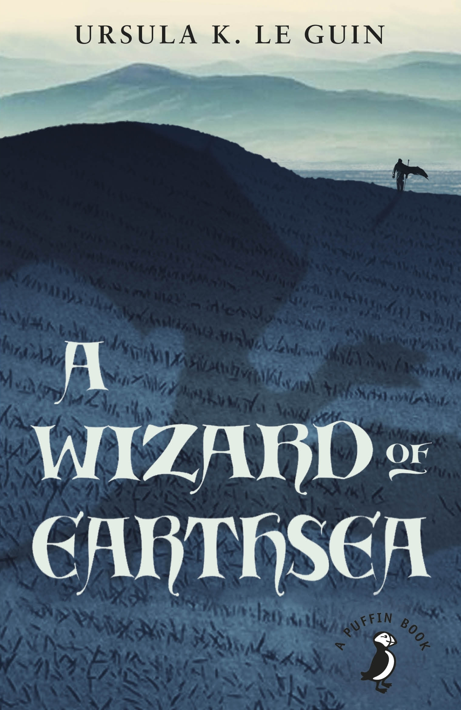
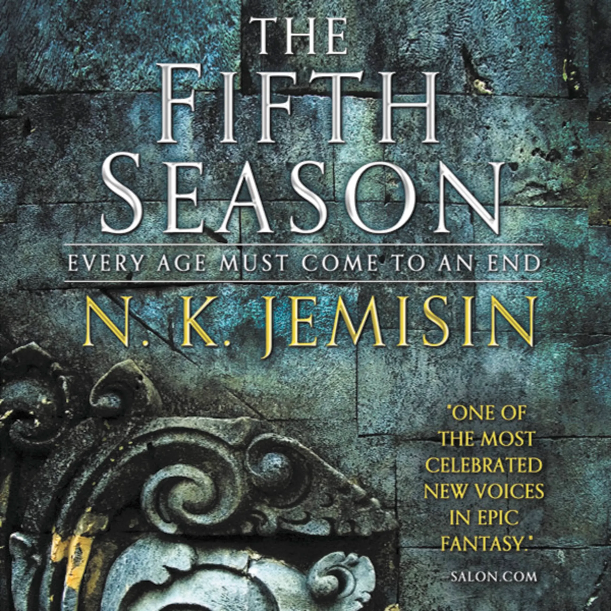

A Wizard of Earthsea
A Wizard of Earthsea is a fantasy novel written by American author Ursula K. Le Guin and first published by the small press Parnassus in 1968. It is regarded as a classic of children's literature and of fantasy, within which it is widely influential.

The Fifth Season
The Fifth Season is a 2015 science fantasy novel by N. K. Jemisin.[1][2] It was awarded the Hugo Award for Best Novel in 2016. It is the first volume in the Broken Earth series and is followed by The Obelisk Gate and The Stone Sky.